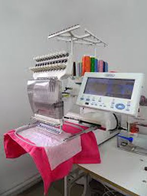

С некоторых пор ручной труд для простых вышивок почти совершенно вытеснен машинным шитьем. Первая вышивальная машина появилась во Франции в 1821 г., но имя изобретателя осталось неизвестно, и вообще не осталось никаких сведений относительно её механизма. 4 года спустя г. Бартелеми Тимонье д’Амплепи (Barthelemy Thimonnier d’Amplepis) изобрел другую машину, которая все-таки не оказалась удобоприменимой для широкого производства. Наконец, на французской выставке 1854 г. появилась машина Гейльмана, которая возбудила всеобщий восторг и произвела целый переворот в производстве вышивок. С тех пор в машине Гейльмана сделано было несколько незначительных изменений, из которых самые удачные изобретены г. Барбом Шмитцом из Нанси; но принципиальная идея и механизм машины Гейльмана остались те же. Без сомнения, машинное вышивание может только быть применимо к не особенно сложным узорам для того, чтобы вышивки могли быть общедоступны и могли получить широкое распространение, иначе затраты при введении нового рисунка так велики, что они не могут оплачиваться. Многие до сих пор предпочитают ручное В., находя, что оно и прочнее и красивее, то есть художественнее, так как фантазия вышивальщицы, не стесненная узкими рамками машинного производства, имеет полный простор. Здесь следует упомянуть о том, что в конце 1880-х годов в Западной Европе, особенно во Франции, стали широко распространяться вышивки по русским общеизвестным образцам, с петушками, конями и т. под. фигурами, вышиваемыми красными, синими и жёлтыми нитками по белой ткани. Одежды с подобными вышивками в 1890 и 1891 гг. можно было встретить часто в Париже на женщинах в собраниях, а особенно на молодых дамах и детях. Подробное описание разных способов вышивания можно найти в «Курсе женских рукоделий» (изд. журнала «Вестник Мод»). Это собственно переделка или даже в основном перевод французской книги: «Encyclopedie des ouvrages de dames», p. Th. Delmont. Рисунки также перепечатаны из этой книги.
